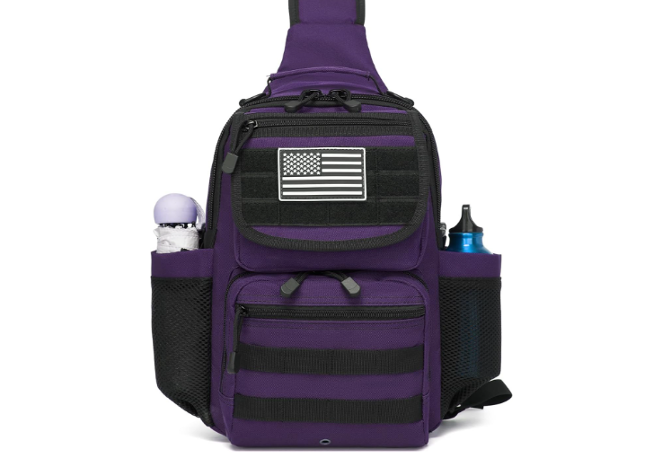
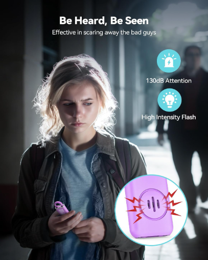
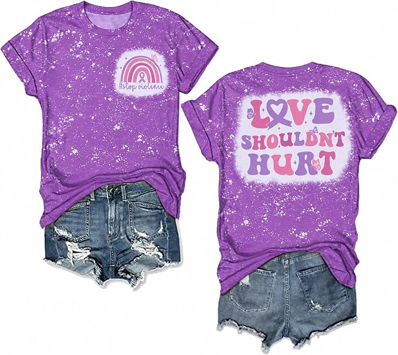
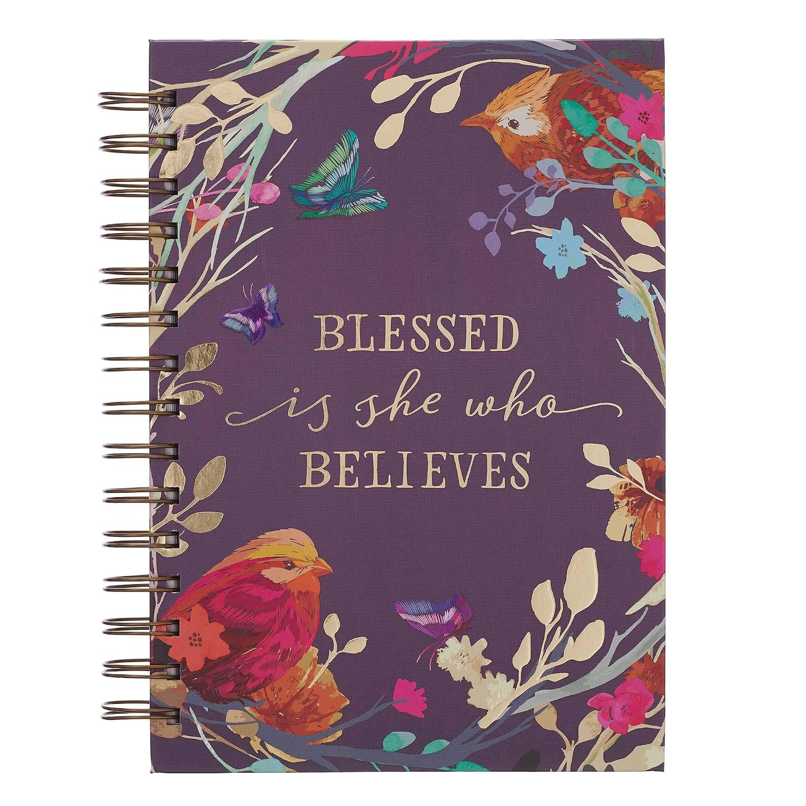

DAY
01
OCTOBER 1
Purple Tactical Sling Bag
A practical purple find to start the month with. Useful, everyday gear with a little personality.
View this find on Amazon →October
Domestic Violence Awareness Month
A month of awareness, reflection, and little reminders that no one deserves to live in fear.
Why I'm Doing This
I'm a survivor of domestic violence, and I know what it feels like to live through something that can make you feel small, isolated, and unseen.
I don't speak for every survivor, and I'm not here to call myself an expert. I'm simply using my own voice and this platform to bring a little light to a subject that can be incredibly dark.
And I'm speaking to women and men alike, because domestic violence can happen to anyone.
If sharing a little of my own story helps someone feel less alone, then it is worth saying out loud.
Small Finds. Big Meaning.
Each day throughout October, I'm sharing a purple find from Amazon. Some are practical. Some are just pretty. All of them give me another reason to keep purple visible this month.

OCTOBER 1
A practical purple find to start the month with. Useful, everyday gear with a little personality.
View this find on Amazon →
OCTOBER 2
A small safety-focused find designed to help attract attention when someone needs it.
View this find on Amazon →
OCTOBER 3
A purple reminder worth wearing: love should never require someone to accept being hurt, controlled, threatened, or afraid.
View this find on Amazon →
OCTOBER 4
Sometimes writing things down matters. Dates, conversations, incidents, questions, or things you simply don't want to forget. A private place to keep your thoughts and your own record of what happened.
If you're documenting an experience for yourself or preparing to talk with someone you trust, keeping your notes together can help you keep track of the details that matter to you.
View this find on Amazon →
Soft, plush comfort with a little wild style. Perfect for the couch, bed, or cozy movie nights.
View this find on Amazon →
Give your charging station an upgrade! This space-saving tower features 12 AC outlets and 4 USB ports, including USB-C, to help keep your devices powered and your desk organized. Available in romantic purple.
View this find on Amazon →
Light up your workspace in purple! This adjustable LED desk lamp features touch controls, dimming, adjustable color temperature, and a USB port. A handy addition to a desk, craft table, study area, or bedside table.
View this find on Amazon →
Who decided even car accessories need a wardrobe? This soft velvet hoodie adds a funny pop of purple to your interior while helping protect your gear shift from dust, scratches, and cold winter hands. It's washable, too!
View this find on Amazon →
A little organization goes a long way! This compact, rotating pen holder features five compartments and a 360-degree design for keeping pens, pencils, markers, makeup brushes, and other small essentials within reach. Practical, space-saving, and pretty enough to display.
View this find on Amazon →
Cute, roomy, and ready to go! This lightweight puffer tote features a padded laptop sleeve, multiple pockets, and oversized side pockets designed to fit tumblers up to 40 oz. Take it to work, class, the gym, or on your next trip.
View this find on Amazon →
Who says kitchen storage has to be boring? This decorative wooden spice rack features 24 individual compartments and a vibrant purple finish. Hang it on the wall or display it on a counter to organize your favorite seasonings while adding a playful vintage touch to your kitchen.
View this find on Amazon →
Give your bathroom a little refresh! This six-piece Turkish cotton towel set includes two bath towels, two hand towels, and two washcloths. Made with 100% ringspun cotton, a plush 600 GSM weight, and double-stitched hems for everyday use.
View this find on Amazon →If This Month Is Personal For You
This page is here for awareness and conversation. If you or someone you know is experiencing domestic violence, please consider reaching out to a qualified support organization or someone you trust.
Some links on this page are affiliate links, which means I may earn a commission if you make a purchase through them at no additional cost to you.
As an Amazon Associate I earn from qualifying purchases.